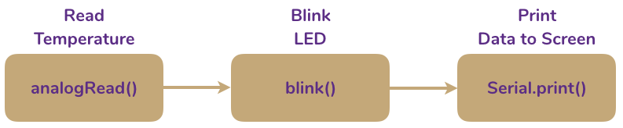

Exercise 4 Functions: Building Blocks for Programs
Objective: Create a blink() function in Arduino.
Introduction
In previous exercises discussed the two function, setup() and loop() that are necessary for every Arduino sketch. You’ve also (perhaps unknowingly) used pre-defined functions to achieve tasks. In programming, a function is a defined piece of reusable code that can be used to perform an action. You could think of functions as modules that can be stacked together to create a program. For example, the items digitalWrite() and Serial.print() are both functions. The first, as we’ve seen, controls the logic level of a digital I/O pin on the Teensy while the latter prints data to the serial port.
Note that functions all have a defined stucture, or syntax. This may vary from language to langages, but will be the same within any language. In Arduino (C), functions always take the form function(argument_1, argument 2, ...);, where function() is the function and argument_1, etc., are the entities the function acts on or uses in some way while executing the function. This is very similar to functions in mathmatics. Assume, for example:
\[ f(x) = 3x \\ \]
Here, we’ve defined a function, \(f\), that acts on argument \(x\). If we write \(f(2)\), we are saying we wish to substitute 2 for x in the function, yielding \(f(x) = 3 \times 2 = 6\).
We could just as easily do this in Arduino. Using the same example, we can define a function f():
This function is equivalent to the mathmatical expression above. First, we define a function f() that takes one argument, x (contained within the parentheses). Within the function (denoted by the curly braces), we ask Arduino to output, or return, \(3 \times x\). After defining the function, we could write f(2) and Arduino would output 6.
*What would Arduino output if you wrote
f(4)?
Using Functions
Although most of the work done in this class will rely on pre-written functions, You’ll explore the methods for writing your own function in this exercise to help you understand how they work. As mentioned above, you can think of function as modules or building blocks that can be combined to create desired outcome. For example, if you wished to create a program that flashed a light everytime the temperature was read and then displayed the result to the screen, you might wish to combine blocks for reading the temperature, flashing a light, and printing data to the computer screen:

Creating the block diagrams can be very helpful in visualizing what a program will do, and just the process of creating one can help you think through what the program needs to achieve line-by-line. The program above has one problem: it assumes there is a function called blink() that will flash the LED. This is not true, but you’ll make one in this exercise. A list of built in functions can be found on the Arduino website; other functions specific to this class can be found in [Appendix C][Appendix C: Functions].
4.1 Set up the Teensy
- You do not need to connect anything to the Teensy. You will use the built-in orange LED for this exercise. Make sure nothing is connected to the breadboard other than the Teensy.
4.2 Writing a blink() Function
- On your worksheet, create a diagram like the one above for a function that would blink and LED on and off. Your function should:
- Be called
blink(). - Turn the LED on for a set amount of time.
- Turn the LED off for a set amount of time.
- Be called
- Define your function in Arduino. Open a blank sketch by clicking
File > Examples > Bare Minimum. Add your variable definitions to the top and set the appropriate pins as outputs in yoursetup()function usingpinMode. Refer to your previous exercises if you can’t remember how to do those things.
// define variables here
void setup() {
// set pinMode() here
}
void loop() {
// leave blank for now
}- Define your
blink()function at the bottom of your sketch. Follow the format below (don’t worry about thevoidpart now – just know that you need to use it).
// define variables here
void setup() {
// set pinMode() here
}
void loop() {
// leave blank for now
}
void blink(int ledPin) {
digitalWrite(ledPin, HIGH); // turn LED on
___________________________ // wait x milliseconds
___________________________ // turn LED off
___________________________ // wait x milliseconds
}4.3 Using Functions
- Add the function into your code and test it out.
// define variables here
void setup() {
// set pinMode() here
}
void loop() {
blink(________);
}
void blink(int ledPin) {
digitalWrite(ledPin, HIGH); // turn LED on
___________________________ // wait x milliseconds
___________________________ // turn LED off
___________________________ // wait x milliseconds
}4.4 Write Functions With Multiple Arguments
- Create a second function called
blink2();. It should do the same thing as blink but allow the user to change the blinking time interval.
void blink2(int ledPin, int interval) {
// turn LED on
// wait x milliseconds
// turn LED off
// wait x milliseconds
}- Use this function in your code in combination with
blink().
4.5 Turn In
- Turn in a hardcopy of your completed worksheet.
- Turn in an electronic copy of your code containing the functions
blink();andblink2()that shows use of both.